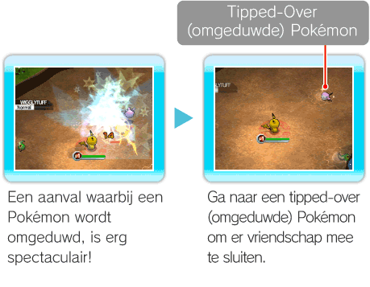

13 |
Stages (levels) |
 |
|
Stage-scherm (levelscherm) Op het Stage-scherm (levelscherm) zie je de Mini Map (minikaart), Current (huidige) Een Stage (level) doorlopen Versla Foe (vijandelijke) Pokémon en doorloop elke Stage (level). Elke Stage (level) bestaat uit verschillende gebieden. Aan het eind van elk gebied vind je een Launch Pad (lanceerplatform) waarmee je het volgende gebied kunt bereiken. Aan het eind van het laatste gebied word je opgewacht door een Boss (eindbaas). Versla de Boss (eindbaas) om de Stage (level) te voltooien. Als je naar een volgend gebied gaat, kun je niet meer terug naar het vorige gebied. Als je TO THE TERMINAL (naar de terminal) selecteert in het Pause Menu (pauzemenu, zie pag. 16, Pause Menu (pausemenu)), verlies je alle Pokémon met wie je vriendschap hebt gesloten en
Pokémon omduwen om vriendschap met ze te sluiten Wanneer je een Pokémon verslaat, kun je ze soms omduwen. Als je een omgeduwde Pokémon aanraakt, sluit je er vriendschap mee. Je kunt op elk moment je eigen Pokémon wisselen met een van de andere Pokémon in je verzameling via het Switch Menu (wisselmenu, zie pag. 11, Switch Menu (wisselmenu)). Tijdens Co-op Play (samenspelen, zie pag. 18, Faciliteiten voor Co-op Play (samenspelen)) kunnen Befriended (bevriende) Pokémon alleen worden gebruikt door de speler die vriendschap met ze heeft gesloten, tot aan het eind van de Stage (level). Als je een Pokémon Wobbly (uit balans) slaat met een Critical Hit (extra harde klap, zie pag. 15, Critical Hits (extra harde klappen)) en opnieuw aanvalt, heb je meer kans om de Pokémon om te duwen. Opmerking: Pokémon die zijn omgeduwd, verdwijnen na een bepaalde periode.  Pokémon omruilen Als je de Pokémon waarmee je speelt wilt omruilen voor een andere, druk je op
HP en Wonder Keys (wondersleutels) Je hebt drie Wonder Keys (wondersleutels) ( Pokémon die geen HP (energiepunten) meer hebben, kun je pas weer gebruiken als je terugkeert naar de Terminal. Tijdens Co-op Play (samenspelen) zijn de HP (energiepunten) van elke speler specifiek voor de Pokémon waarmee hij of zij speelt, maar worden de sleutels door alle spelers gedeeld. Let op: als je geen Befriended (bevriende) Pokémon meer beschikbaar hebt en je geen HP (energiepunten) meer hebt, is het spel voorbij, ook als je nog sleutels overhebt.
Gevechten tegen de Boss (eindbaas) In het laatste gebied van een Stage (level) wacht er een Boss (eindbaas) op je om je op de proef te stellen. Versla de Boss (eindbaas) door ervoor te zorgen dat hij geen HP (energiepunten) meer heeft (groene meter), waarna het Launch Pad (lanceerplatform) verschijnt. Spring op het Launch Pad (Lanceerplatform) om de Stage (level) te verlaten. Als je een Boss (eindbaas) verslaat, heb je soms het geluk dat je vriendschap met hem kunt sluiten. Stage Clear (level voltooid-scherm) Wanneer je de Stage (level) hebt voltooid, zie je hoeveel Pokémon elke speler heeft verslagen. Daarna krijg je te zien met welke Pokémon je in de Stage (level) vriendschap hebt gesloten. Als MOST POWERFUL (machtigste) op het level voltooid-scherm verschijnt, heeft deze Pokémon nu de grootste Power (kracht) van alle Pokémon waarmee je vriendschap hebt gesloten. Als NEW! (nieuw) verschijnt, is de betreffende Pokémon de eerste van dit type waarmee je vriendschap hebt gesloten. |
 om het Switch Menu (wisselmenu) te openen en in de lijst met Pokémon de Pokémon te selecteren waarmee je wilt spelen. Als je een Pokémon wisselt voordat je HP (energiepunten) 0 zijn, kun je doorgaan met het spel zonder een sleutel te verliezen. Terwijl je het Switch Menu (wisselmenu) open hebt, gaat het spel gewoon door. Je kunt dus door een aanval worden geraakt terwijl je Pokémon wisselt. Let op: als je door een aanval wordt geraakt terwijl je Pokémon probeert te wisselen, wordt het wisselen geannuleerd.
om het Switch Menu (wisselmenu) te openen en in de lijst met Pokémon de Pokémon te selecteren waarmee je wilt spelen. Als je een Pokémon wisselt voordat je HP (energiepunten) 0 zijn, kun je doorgaan met het spel zonder een sleutel te verliezen. Terwijl je het Switch Menu (wisselmenu) open hebt, gaat het spel gewoon door. Je kunt dus door een aanval worden geraakt terwijl je Pokémon wisselt. Let op: als je door een aanval wordt geraakt terwijl je Pokémon probeert te wisselen, wordt het wisselen geannuleerd.


 |
 |
 |